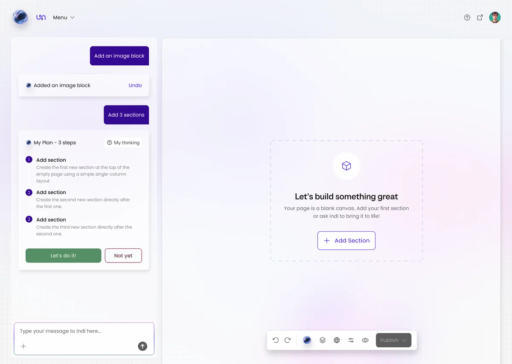
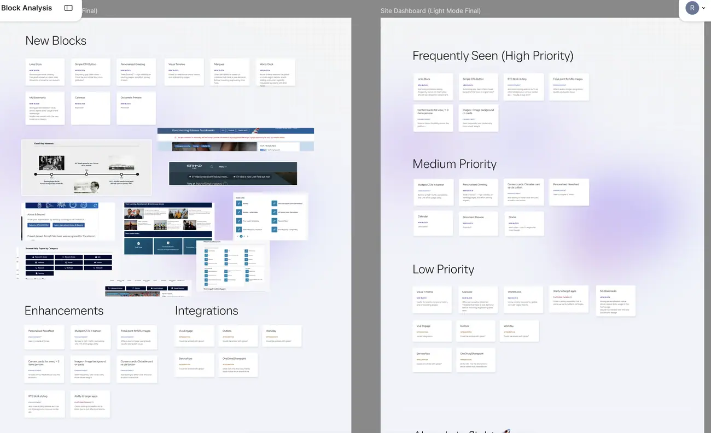
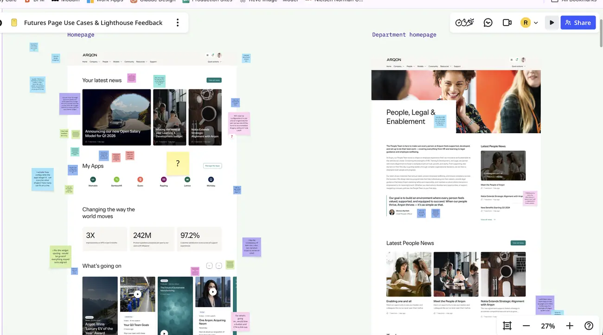
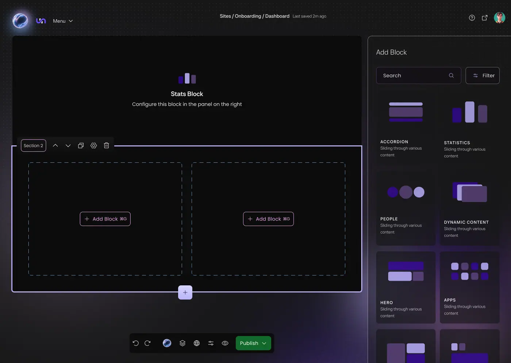
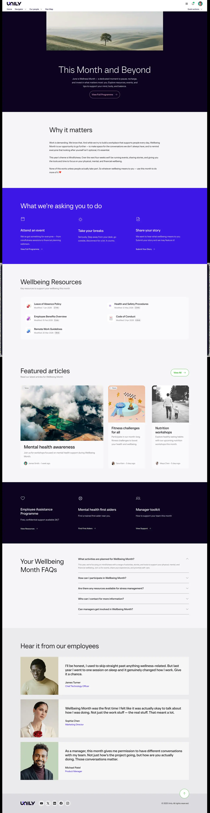
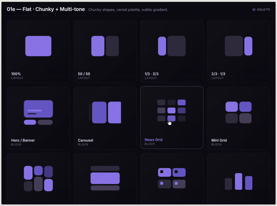
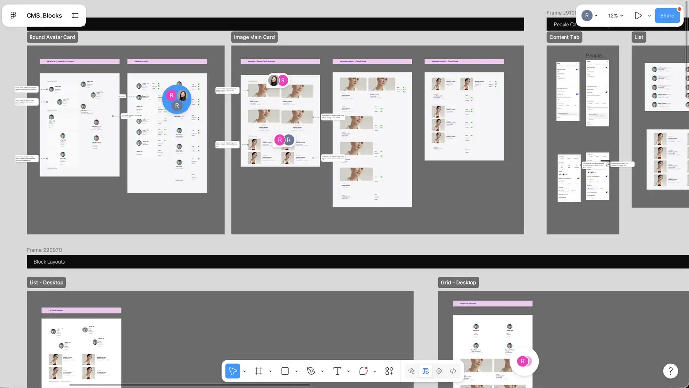
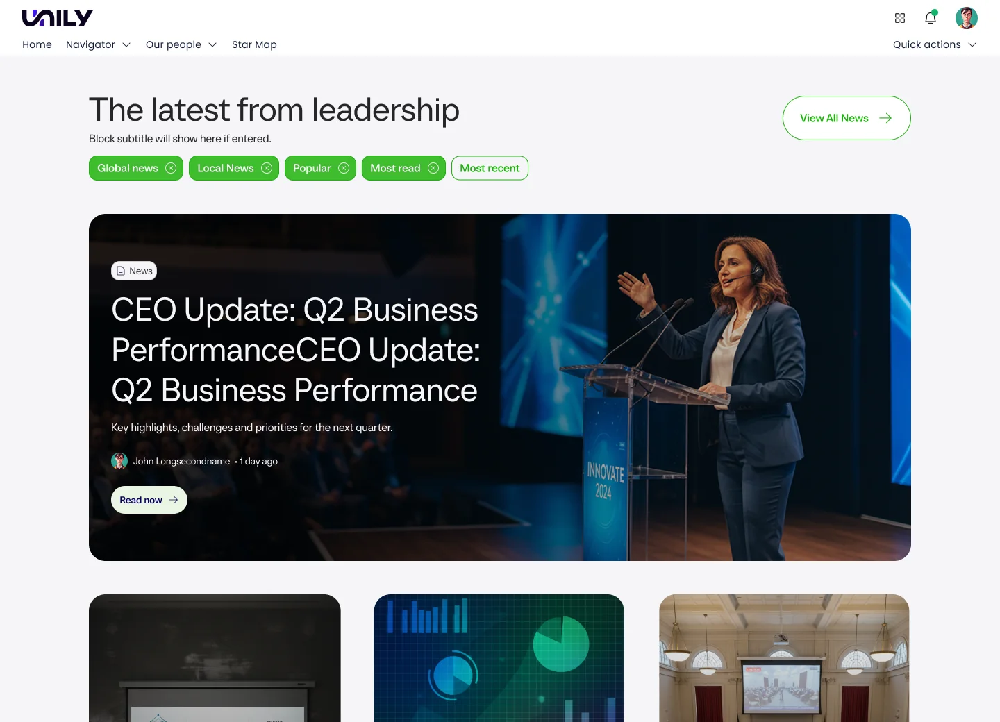
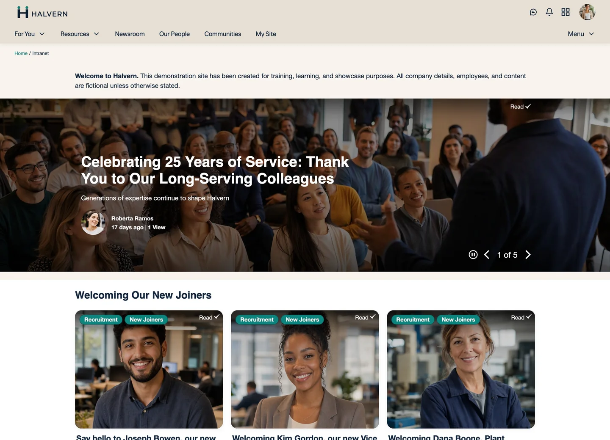

A block system a CMS editor and an AI agent can both build with
Futures shipped with no way to build a page. I designed the block library, the responsive rules and the CMS editing experience — for two builders who fail in opposite directions.
Two builders, two failure modes
Futures launched with no native way to build a page. No block library, no defined visual language, no CMS experience for configuring one — and two very different builders who both needed one, failing in opposite directions.
The CMS editor defaults to caution. In prototype testing, editors reached for whichever two or three configurations they had been shown first rather than exploring the range available to them. They learn what looks right through trial and error, not documentation. What they need is guardrails that prevent mistakes, not more options to weigh up.
Indi — Unily’s AI experience agent — has the opposite problem. No visual intuition to fall back on, so open-ended fields produce pages that are technically valid and visually broken. It reasons through Unily’s OPAR framework and checks its own output against a Brand Identity Agent, which means every rule it works to has to be explicit enough to verify programmatically. Guidelines that read well to a human designer are not enough.
Without a shared system, every page would have to be reasoned about individually rather than assembled from a trusted set of parts. Slow, inconsistent builds for editors — and no foundation at all for Indi.


The breakage wasn’t layout, it was content
Three findings shaped the system more than anything else. Editors defaulted to safe configurations, repeating the arrangements demonstrated to them first rather than exploring what was available — so the guardrails had to be built in, not documented. Indi needed constraints, not options: fields designed around a human editor’s judgement produced inconsistent results in early testing.
The third is the one that redirected the work. Most breakage traced back to content, not layout. Across both audiences, visually broken test pages were almost always caused by headlines, copy or images falling outside what a block was designed to hold. The grid and the component code were rarely the problem.
That moved the design effort away from more layout options and towards content constraints — which is what both builders actually needed.

Mapped the architecture before drawing a screen
Before designing a single screen, I mapped the block architecture: how blocks compose into a page, where the system-controlled tokens we had agreed with the design system lead end and editor-configurable fields begin, and how Indi’s reference templates relate to that same structure.
That map became the backbone both the block library and the CMS editor experience were built against — and the reason new block types inherit constraints automatically instead of needing a bespoke rule written for Indi every time.
Four things that couldn’t move
No pattern library to build from. Futures had no visual language of its own. The tokens and foundations were shaped with our design system lead — my part was the block layer built on top of them, and holding both to one shared vision so Futures still sat comfortably inside Unily’s wider brand.
Accessibility was non-negotiable. Contrast, alt text and keyboard navigation had to hold for every block, regardless of who — or what — configured it.
Machine-checkable, not just well written. Every rule had to be explicit enough for the Brand Identity Agent to verify programmatically.
Blocks and editor UI had to ship together. The block schema and the CMS configuration screens were designed in parallel, because neither could be validated in isolation from the other.

Constraints, not options
Min and max character ranges, capped grid counts, enforced image crops, required fields. The constraint definitions were negotiated directly with the Indi/AI team so the Brand Identity Agent had something concrete to check against from day one, and early block and editor concepts were tested with prospective CMS editors ahead of general availability.
What came out: hero blocks that auto-adjust image crop and headline size to content length. Card grids that reflow 4 → 2 → 1 and cap their own card count to keep grids balanced. Feature banners with a fixed headline and body character range, so the layout can’t be broken from inside the CMS.
Derived from real pages, not invented
Rather than design one idealised template, I audited live client pages across the platform to find the page types that already existed in practice, then codified the working patterns into a small library of reference templates.
Four recurred: news and announcements, leadership hubs, team and department landings, and campaign or event pages. Indi selects between them by prompt intent rather than forcing every page through the same shape — and the campaign template shares its structure with the Events object model.

The one place I broke the pattern
A block library is, by definition, a set of rules — and rules are where enterprise software goes to become boring. The empty state was the place worth spending the deviation on: abstract animated placeholders that show the layout ratio and block type, instead of a grey rectangle with an icon in it.
It earns its place twice. An editor reads the structure of a page before any content exists, and the dullest screen in the product gets the one bit of motion it was allowed. Not novelty for its own sake — the one moment that could carry it without destabilising the system around it.

One shared library, not a separate set for the AI
A lightweight AI-only block set was faster to ship and would have fragmented the design system permanently — two libraries, two maintenance costs, drift within a quarter. Catching bad AI-generated pages in design review was the other option, and it doesn’t scale past a handful of pages. It also contradicts the promise of an instant prompt-to-page flow.
One library used by both. Explicit constraints instead of open fields. And an agent that checks its own output against documented principles, rather than a human doing it after the fact.

Design review started asking a different question
- Page build time down ~40%, with fewer review rounds.
- Fewer reviews asking “does this look right”, more asking for genuinely new blocks — the clearest sign the constraints were holding without editors or Indi having to be told the rules.
- Now the foundation under every client build on Futures, and the system Communities is built on.
Because this was a 0 to 1 build, the block library and the CMS configuration UI were designed against the token foundations as one connected thing rather than left to evolve separately — and the Indi principles and reference templates were written as versioned documentation alongside them from the start.
The same page, either side of the system
Before is the earlier generation of the product: a home page assembled from fixed widgets in a fixed order — a carousel, a row of news, a column of feeds. After is Futures, where the same kind of page is composed section by section from blocks, by an editor or by Indi, against the token foundations underneath.

